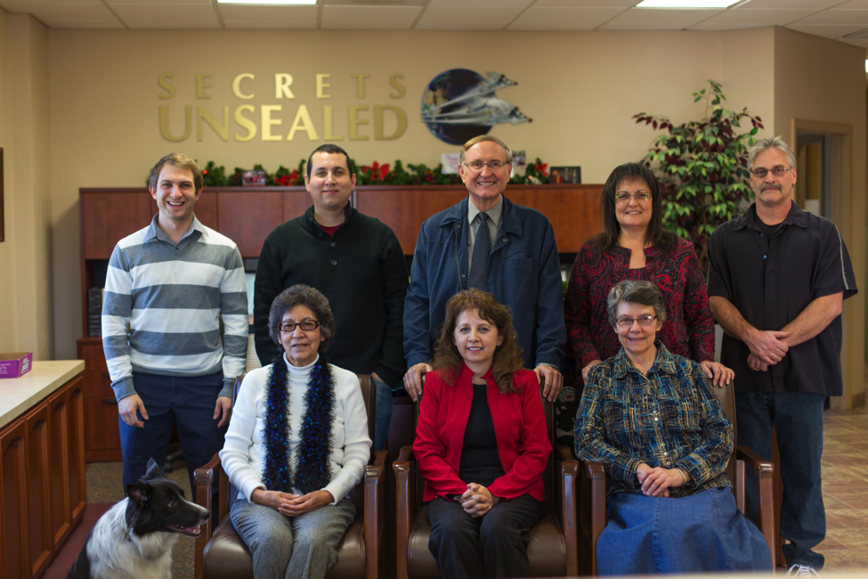

About our ministry and what we believe: Secrets Unsealed is an officially incorporated non-profit organization which is committed to upholding, proclaiming and multiplying the unique end-time Present Truth message which God has entrusted to the Seventh-day Adventist Church to proclaim to the world. Ever conscious of the sacredness of God’s holy truth, we hold high and without apology or compromise all the fundamental teachings of the Bible as well as the distinctive beliefs of our beloved Seventh-day Adventist Church. Among the distinctive beliefs we cherish and uphold are: A literal seven-day creation, the sanctity of the seventh-day Sabbath, the full inspiration of the writings of Ellen G. White, the sanctuary doctrine including the investigative pre-advent judgment, the hope of immortality only through Jesus Christ, historicism as the indispensable method of prophetic interpretation and the burning desire to see Jesus return soon, visibly, literally, personally and pre-millennially. We also believe in and practice a reverent, traditional worship style and seek to uphold the unique Seventh-day Adventist lifestyle. Financially our ministry is sustained by sales of materials and also by tax deductible contributions from those who believe in our mission. We crave the prayers of God’s people for our ministry for we are keenly aware that success is not by might nor by power but by the Holy Spirit.